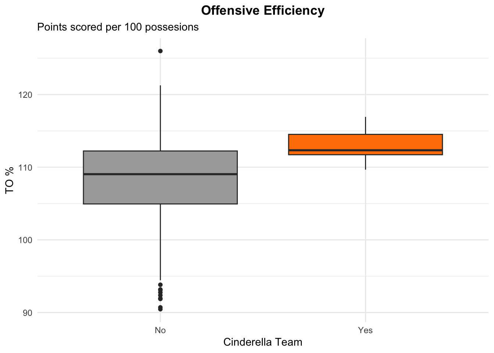
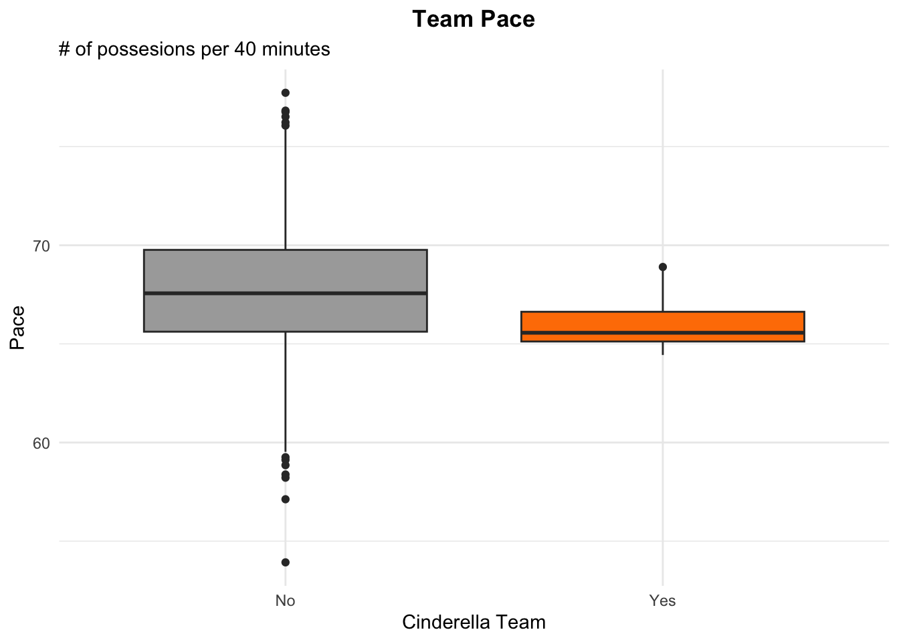
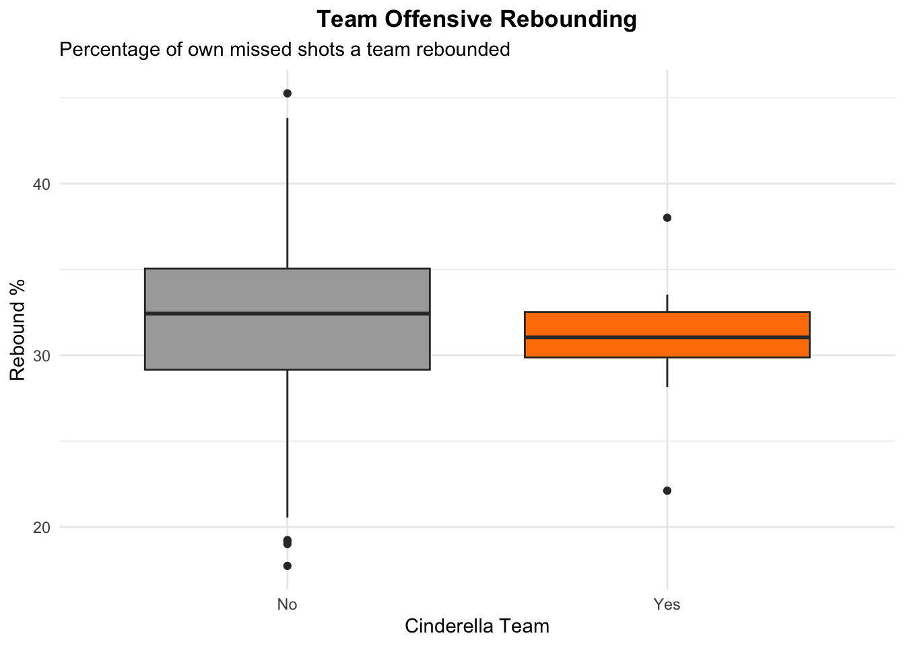
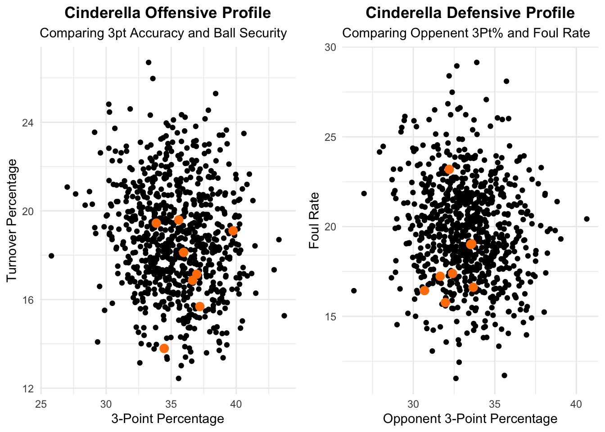

library(tidyverse)
library(here)
library(ggplot2)
library(gridExtra)Introduction
For this Post, I’m exploring March Madness Cinderella teams. I’m hoping to be able to answer the question of how to successfully pick your Cinderella team when you are filling out your bracket. While it is true that it is mostly luck, and who gets hot at the right time, I’m hoping there are some underlying stats that will at least give us some guidance on what makes a good Cinderella team.
The dataset I’m working with is from kaggle called DEV _ MarchMadness.csv. You can find it here: https://www.kaggle.com/datasets/jonathanpilafas/2024-march-madness-statistical-analysis. It contains metrics for 8315 NCAA teams from 2002-2025. To answer my question, I needed to come up with some parameter’s for what is considered a Cinderella team. I decided to have only 9 or above seeds in the tournament, and you had to make the final four. Originally I wanted to do elite 8 to allow for more teams to meet the criteria, but this dataset didn’t have that. I would love to explore that further in the future.
I wanted to examine both offense and defense to help answer my question. I chose 4 statistics from both sides of the ball, and hopefully a couple from each will prove to be significant. Offensively, I went with 3pt%, pace, TO%, and offensive rebounding. Defensively, I went with Foul rate, Opponent 3pt%, steal rate, and possession length. I thought out of the 165 statistics this data set offered, these 8 combined to cover most of the important aspects of the game. All of these stats will also be regular season stats, not tournament stats. That way this will better help answer the question of how to pick a Cinderella team going into the tournament.
# Read in The data
DEV_March_Madness <- read_csv(here("posts", "Post1", "archive", "DEV _ March Madness.csv"))Rows: 8315 Columns: 165
── Column specification ────────────────────────────────────────────────────────
Delimiter: ","
chr (14): Short Conference Name, Mapped Conference Name, Mapped ESPN Team N...
dbl (151): Season, Adjusted Temo, Adjusted Tempo Rank, Raw Tempo, Raw Tempo ...
ℹ Use `spec()` to retrieve the full column specification for this data.
ℹ Specify the column types or set `show_col_types = FALSE` to quiet this message.# make the seed variable numeric
DEV_March_Madness <- DEV_March_Madness |> mutate(Seed = as.numeric(Seed))Warning: There was 1 warning in `mutate()`.
ℹ In argument: `Seed = as.numeric(Seed)`.
Caused by warning:
! NAs introduced by coercion# filter for only march madness teams and 9 or above seeds(to target Cinderella's)
DEV_March_Madness <- DEV_March_Madness |>
filter(`Post-Season Tournament` == "March Madness",
Seed >= 9
)
# create a Cinderella variable
DEV_March_Madness <- DEV_March_Madness |>
mutate(Cinderella = if_else(`Final Four?` == "Yes", "Yes", "No"))Compare offensive and defensive efficiency
## Plot comparing offensive efficiency for Cinderella vs not Cinderella
offense <- ggplot(DEV_March_Madness, aes(x = Cinderella, y = AdjOE, fill = Cinderella)) +
geom_boxplot() +
theme_minimal() +
labs(title = "Offensive Efficiency", subtitle = "Points scored per 100 possesions", x = "Cinderella Team", y = "Pts") +
scale_fill_manual(values = c("Yes" = "darkorange1", "No" = "darkgrey")) +
theme(legend.position = "none", plot.title = element_text(hjust = 0.5, face = "bold"))
## Plot comparing defensive efficiency for Cinderella vs not Cinderella
defense <- ggplot(DEV_March_Madness, aes(x = Cinderella, y = AdjDE, fill = Cinderella)) +
geom_boxplot() +
theme_minimal() +
labs(title = "Defensive Efficiency", subtitle = "Points allowed per 100 possesions", x = "Cinderella Team", y = "Pts") +
scale_fill_manual(values = c("Yes" = "darkorange1", "No" = "darkgrey")) +
theme(legend.position = "none", plot.title = element_text(hjust = 0.5, face = "bold"))
grid.arrange(offense, defense, nrow = 1, ncol = 2)
It seems like Cinderella teams are both above average offensively and defensively by about the same margin. Remember for offensive efficiency, the higher the better because that’s your points scored. For defensive efficiency, the lower the better because that’s points allowed. We are going to have to look deeper into specifics but for now, the team you pick should be good both offensively and defensively. It doesn’t look like one matters more than the other.
Offense
# Boxplot comparing Pace for Cinderella vs not Cinderella
p1 <- ggplot(DEV_March_Madness, aes(x = Cinderella, y = `Pre-Tournament.Tempo`, fill = Cinderella)) +
geom_boxplot() +
scale_fill_manual(values = c("Yes" = "darkorange1", "No" = "darkgrey")) +
theme_minimal() +
labs(title = "Team Pace", subtitle = "# of possesions per 40 minutes", x = "Cinderella Team", y = "Pace") +
theme(legend.position = "none", plot.title = element_text(hjust = 0.5, face = "bold"))
## BoxPlot comparing Rebounding for Cinderella vs not Cinderella
p2 <- ggplot(DEV_March_Madness, aes(x = Cinderella, y = ORPct, fill = Cinderella)) +
geom_boxplot() +
theme_minimal() +
labs(title = "Team Offensive Rebounding", subtitle = "Percentage of own missed shots a team rebounded", x = "Cinderella Team", y = "Rebound %") +
scale_fill_manual(values = c("Yes" = "darkorange1", "No" = "darkgrey")) +
theme(legend.position = "none", plot.title = element_text(hjust = 0.5, face = "bold"))
## BoxPlot comparing Shooting for Cinderella vs not Cinderella
p3 <- ggplot(DEV_March_Madness, aes(x = Cinderella, y = FG3Pct, fill = Cinderella)) +
geom_boxplot() +
theme_minimal() +
labs(title = "Team Three Point %", x = "Cinderella Team", y = "3pt %") +
scale_fill_manual(values = c("Yes" = "darkorange1", "No" = "darkgrey")) +
theme(legend.position = "none", plot.title = element_text(hjust = 0.5, face = "bold"))
## Plot comparing Turnovers for Cinderella vs not Cinderella
p4 <- ggplot(DEV_March_Madness, aes(x = Cinderella, y = TOPct, fill = Cinderella)) +
geom_boxplot() +
theme_minimal() +
labs(title = "Team Turnover %", subtitle = "% of team's possesions that end in a turnover", x = "Cinderella Team", y = "TO %") +
scale_fill_manual(values = c("Yes" = "darkorange1", "No" = "darkgrey")) +
theme(legend.position = "none", plot.title = element_text(hjust = 0.5, face = "bold"))
grid.arrange(p1, p2, p3, p4, nrow = 2, ncol = 2)
Pace: It seems as though Cinderella teams actually play a little slower than average. I was expecting this to be the other way around. However, there are no Cinderella outliers on the low end, so I would avoid teams that play super slow.
Offensive Rebounding: There isn’t a huge difference in offensive rebounding for Cinderella teams, in fact they are a little bit below average. Based on this plot, I don’t think this stat has a huge impact. There are even outliers on both ends.
3pt %: This is the first stat that looks to be super impactful. Cinderella teams are over a full percentage above average in 3pt shooting, with an outlier on the high end. Also, there aren’t any poor shooting Cinderella teams. This tells us to make a deep run, you need to shoot well.
Turnover %: Here, Cinderella teams have a pretty significantly lower TO%. In single elimination, with all these close games, it makes sense that taking care of the ball and being able to get shots up is key. Lower turnover percentage also limits the opponents fast break opportunities. It makes sense that Cinderella teams don’t turn the ball over.
Overall, from what we’ve looked at on the offensive side, it appears Shooting and limiting turnovers are key factors in being able to make a deep run.
Defense
# Boxplot comparing Foul Rate for Cinderella vs not Cinderella
p5 <- ggplot(DEV_March_Madness, aes(x = Cinderella, y = DefFT, fill = Cinderella)) +
geom_boxplot() +
scale_fill_manual(values = c("Yes" = "darkorange1", "No" = "darkgrey")) +
theme_minimal() +
labs(title = "Defensive Foul Rate",
subtitle = "Free Throw Rate Allowed",
x = "Cinderella Team", y = "Foul Rate") +
theme(legend.position = "none", plot.title = element_text(hjust = 0.5, face = "bold"))
# Boxplot comparing Steal Rate for Cinderella vs not Cinderella
p6 <- ggplot(DEV_March_Madness, aes(x = Cinderella, y = StlRate, fill = Cinderella)) +
geom_boxplot() +
scale_fill_manual(values = c("Yes" = "darkorange1", "No" = "darkgrey")) +
theme_minimal() +
labs(title = "Defensive Steal Rate",
subtitle = "Percentage of possessions ending in a steal",
x = "Cinderella Team", y = "Steal Rate") +
theme(legend.position = "none", plot.title = element_text(hjust = 0.5, face = "bold"))
# Boxplot comparing Opponent 3pt % for Cinderella vs not Cinderella
p7 <- ggplot(DEV_March_Madness, aes(x = Cinderella, y = OppFG3Pct, fill = Cinderella)) +
geom_boxplot() +
scale_fill_manual(values = c("Yes" = "darkorange1", "No" = "darkgrey")) +
theme_minimal() +
labs(title = "Opponent 3Pt%",
x = "Cinderella Team", y = "Opp 3pt %") +
theme(legend.position = "none", plot.title = element_text(hjust = 0.5, face = "bold"))
# Boxplot comparing Defensive Possession Length for Cinderella vs not Cinderella
p8 <- ggplot(DEV_March_Madness, aes(x = Cinderella, y = `Avg Possession Length (Defense)`, fill = Cinderella)) +
geom_boxplot() +
scale_fill_manual(values = c("Yes" = "darkorange1", "No" = "darkgrey")) +
theme_minimal() +
labs(title = "Defensive Possesion Length",
subtitle = "Avg seconds per defensive possession",
x = "Cinderella Team", y = "Seconds") +
theme(legend.position = "none", plot.title = element_text(hjust = 0.5, face = "bold"))
grid.arrange(p5, p6, p7, p8, nrow = 2, ncol = 2)Warning: Removed 264 rows containing non-finite outside the scale range
(`stat_boxplot()`).
Foul Rate: Cinderella teams have a significantly lower foul rate. This makes a lot of sense. Putting your opponent on the line and giving them free points is an easy way to lose control of a game. We do have one outlier here with a high foul rate, but despite that the median is still much lower.
Steal Rate: Cinderella teams also have a higher steal rate, although this isn’t as big of a difference. We don’t have any outliers here but it doesn’t seem like this is too significant.
Opponent 3pt%: Cinderella teams seem to hold there opponents to a much lower percentage from 3. Just like offensively, 3pt shooting seems to be a key difference maker. If you lose the 3pt battle your going to find yourself in a hole.
Possession Length: Lastly, this one is about the same for Cinderella and non-Cinderella teams. I was curious if this stat could tell us if teams who are solid defensively, and force worse shots towards the end of the shot clock were more likely to be Cinderella teams. However, with less than half a second of difference, it doesn’t appear so.
Overall defensively, it looks like our biggest difference makers are foul rate and 3pt %.
Now, let’s take these 4 key stats we’ve found and plot them together
Final Scatterplots
#offensive scatterplot
library(ggrepel)
p9 <- ggplot(data = DEV_March_Madness, aes(x = FG3Pct, y = TOPct)) +
geom_point(data = subset(DEV_March_Madness, Cinderella == "No")) +
geom_point(data = subset(DEV_March_Madness, Cinderella == "Yes"), color = "darkorange1", size = 3) +
theme_minimal() +
labs(title = "Cinderella Offensive Profile",
subtitle = "Comparing 3pt Accuracy and Ball Security",
x = "3-Point Percentage",
y = "Turnover Percentage") +
theme(plot.title = element_text(hjust = 0.5, face = "bold"))
# defensive scatterplot
p10 <- ggplot(data = DEV_March_Madness, aes(x = OppFG3Pct, y = DefFT)) +
geom_point(data = subset(DEV_March_Madness, Cinderella == "No")) +
geom_point(data = subset(DEV_March_Madness, Cinderella == "Yes"), color = "darkorange1", size = 3) +
theme_minimal() +
labs(title = "Cinderella Defensive Profile",
subtitle = "Comparing Oppenent 3Pt% and Foul Rate",
x = "Opponent 3-Point Percentage",
y = "Foul Rate") +
theme(plot.title = element_text(hjust = 0.5, face = "bold"))
grid.arrange(p9, p10, nrow = 1, ncol = 2)
Here we have two plots, one for offense and one for defense. On the offensive side we’ve chosen Turnover % and 3pt % and we can see the Cinderella teams all fall in the bottom right quadrant. This makes sense because based on our axis, the bottom right contains teams with a high 3pt % and low TO%. On the defensive side of things, we’ve selected Foul Rate and Opponent 3pt %. Most of the Cinderella teams fall in the bottom left quadrant here, except for one oultier with a high foul rate. The bottom left quadrant contains teams who defend the 3 pointer well and don’t foul.
Conclusion
All of this can give us some guidance on how to pick a good candidate for a Cinderella team. We know they must shoot well and take care of the ball, while also defending the 3pt line and defending without fouling. However, at the end of the day a lot of luck goes into this. If you look at the scatter plots, despite our Cinderella teams falling in the quadrants we expect them too, there are also hundreds of other teams in those quadrants who weren’t able to make a deep run. Although, our conclusion was also able to eliminate a lot of teams from contention, so this formula at least gives you better odds of guessing correctly.
I mentioned it before, but a flaw of this approach was that I could only consider a team a Cinderella team if they made it to the final four. This only left us with 8 teams. I wonder if we were able to loosen the requirements a little we could have gotten more teams, and therefore different results. This would definetely be a direction I would take if I had more time.
Connection to Data Visualization
Finally, how does all of this connect to ideas of data visualization? A lot of the visualizations we looked at were side-by-side boxplots. Oftentimes, we were comparing a specific stat between Cinderella and non-Cinderella teams. In other words, we had 1 quantitative variable and 1 categorical variable. I chose boxplots instead of bar plots because it would be beneficial to get a better idea of things like spread and outliers. Getting a full scale from 0-100 doesn’t really matter in these cases with basketball percentages, it was better to zoom in and get a better comparison. I also used either a 1x2 or a 2x2 grid layout to display the boxplots to help my post aesthetically. It took up much less space, and was easier to compare different stat’s to see which ones mattered most. For our final plots, we had 2 quantitative variables, so we shifted from boxplots to scatterplots.
There were also other techniques of data visualization that went into this such as colors and sizing. I made everything representing Cinderella teams orange to stand out from the thousands of other teams in black/grey. I also enlarged the points representing Cinderella teams on the scatterplots to emphasize them.